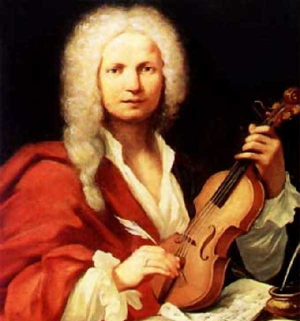
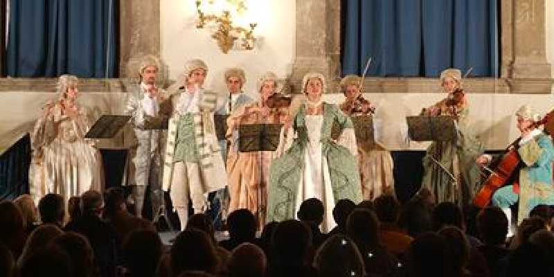
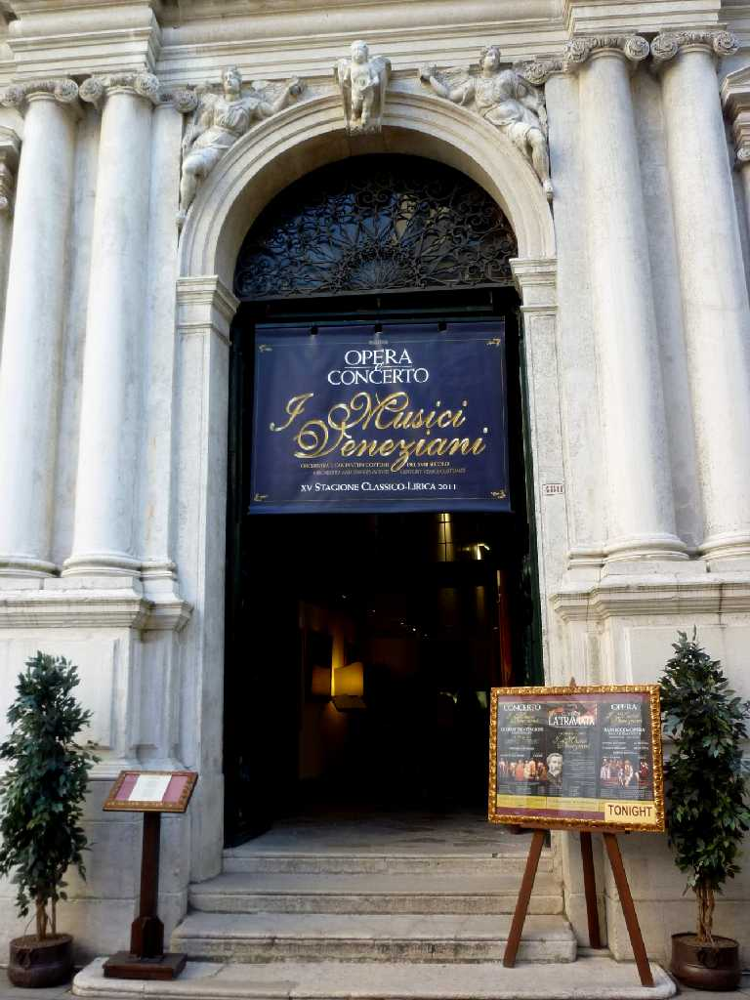
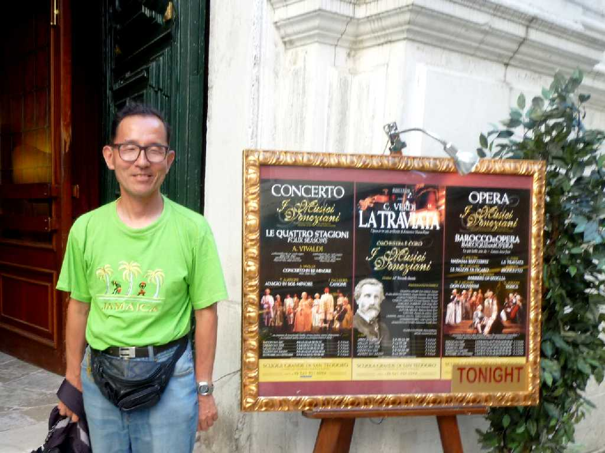
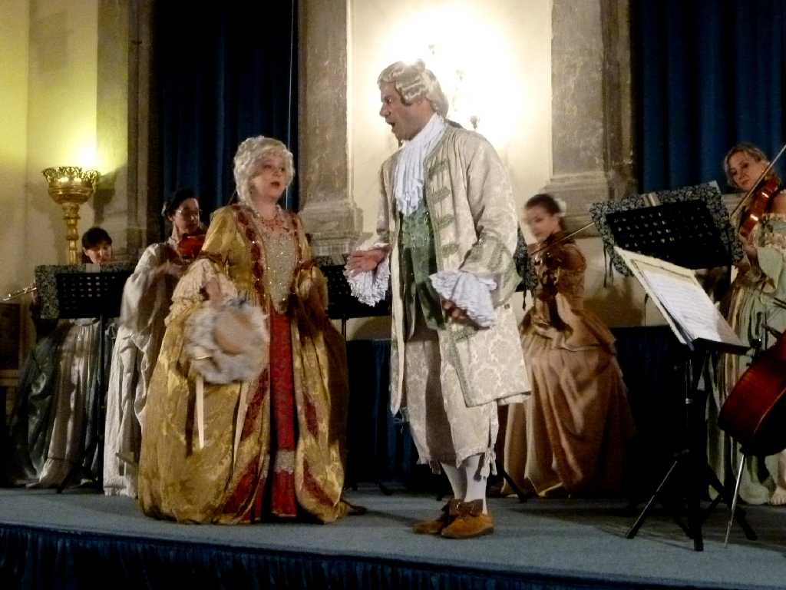

Antonio Lucio Vivaldi
Le quattro stagioni
Mutter
Karajan Wiener Philharmoniker

Antonio Lucio Vivaldi
12 Sonatas for 2 violins Op.1 Accardo I Musici

Antonio Lucio Vivaldi
12 sonatas for violin Op.2 Accardo I Musici

Antonio Lucio Vivaldi
L'estro Armonico Op.3 Michelucci I Musici

Antonio Lucio Vivaldi
La stravaganza Op.4 Ayo I Musici

Antonio Lucio Vivaldi
6 Violin Sonatas Op.5 Accardo I Musici

Antonio Lucio Vivaldi
6 Violin Concertos, Op.6 Carmirelli I Musici

Antonio Lucio Vivaldi
12 Concertos Op.7 Accardo I Musici

Antonio Lucio Vivaldi
Il cimento dell'armonia e dell'inventione (Le quattro stagioni) Op.8
Ayo I Musici

Antonio Lucio Vivaldi
Antonio Lucio Vivaldi
La cetra
Op.9
Ayo I Musici

Antonio Lucio Vivaldi
6 Flute Concertos Op.10 Gazzelloni I Musici

Antonio Lucio Vivaldi
6 Concertos, Op.11
Accardo I Musici

Antonio Lucio Vivaldi
6 Violin Concertos, Op.12 Accardo I Musici

Antonio Lucio Vivaldi Juditha triumphans devicta Holofernis barbarie



I Musici
 
June 30 2011 Teatro San Giovanni Grisostomo

June 30 2011 I Musici Veneziani